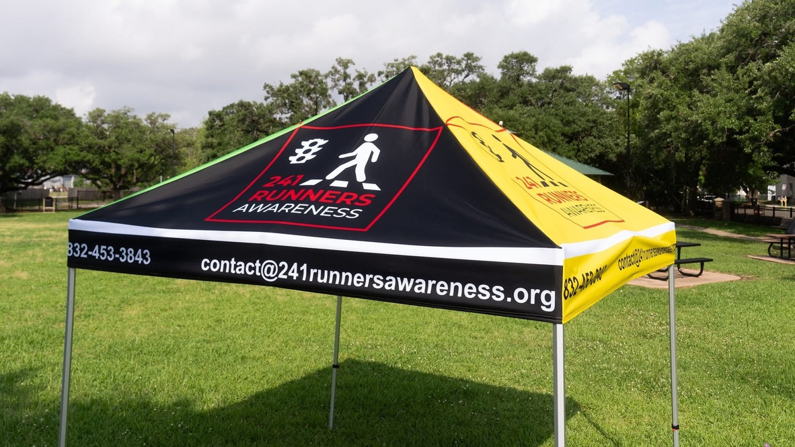

Goals and Objective

Our Mission


241 Runners Awareness was founded to bridge the critical gaps between runaway youth, their families, and law enforcement, with the goal of ensuring no child is lost without recognition or support... Read more
Upcoming Events

Wildflower Trail Races,
Sat 10th May 2025 - Sun 11th May 2025,
6:00AM CDT,
Bastrop, Texas
Distances: Ultra, 10km, 5km, Half Marathon
Contact Us
Phone: 832-453-3843 | Email: contact@241runnerawareness.org